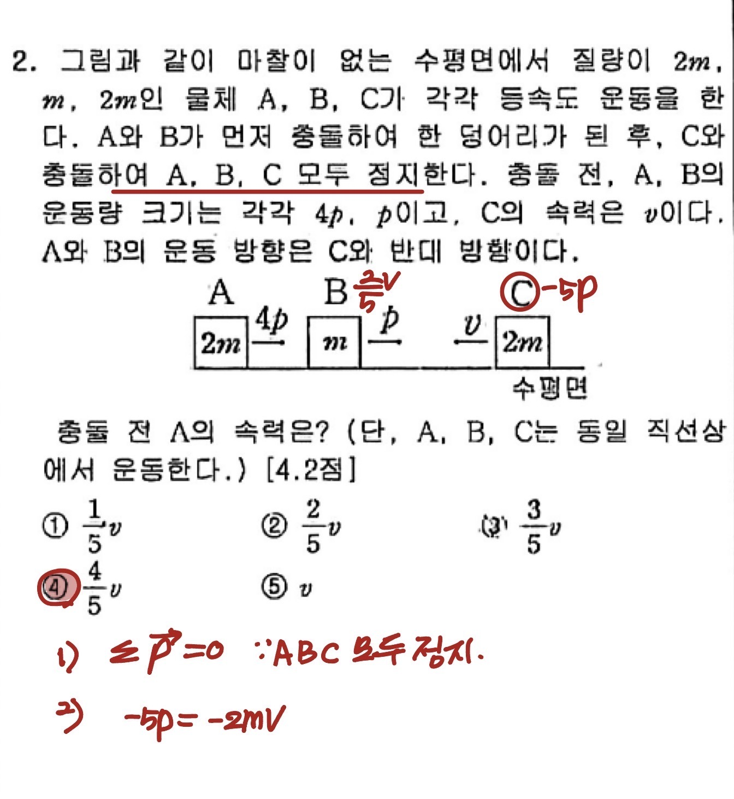
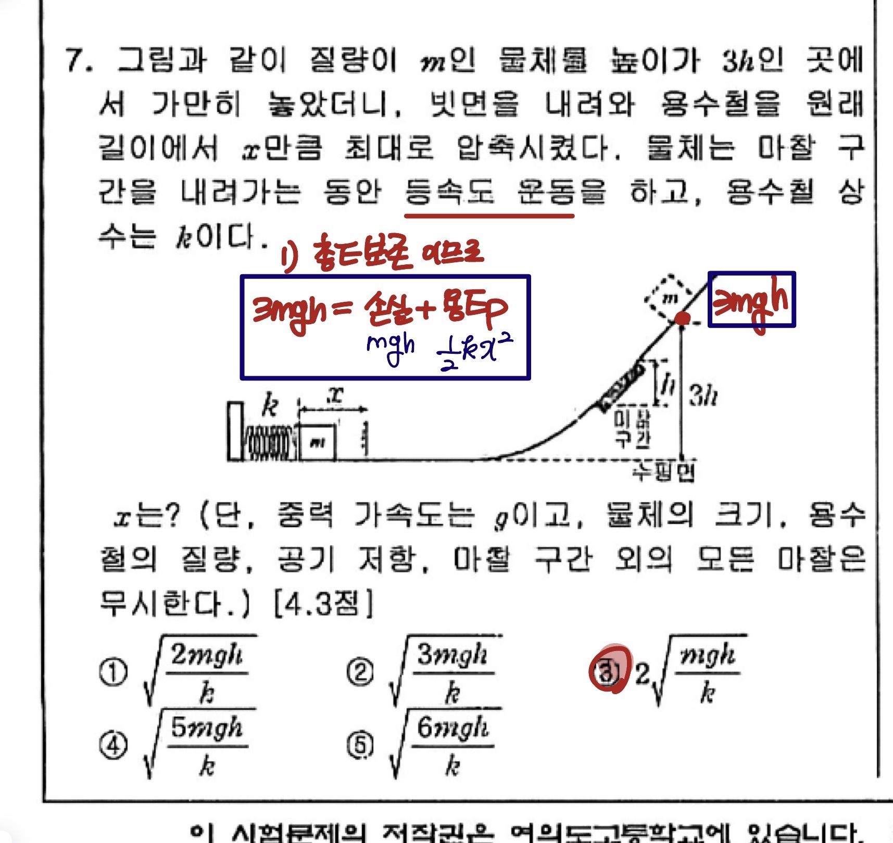
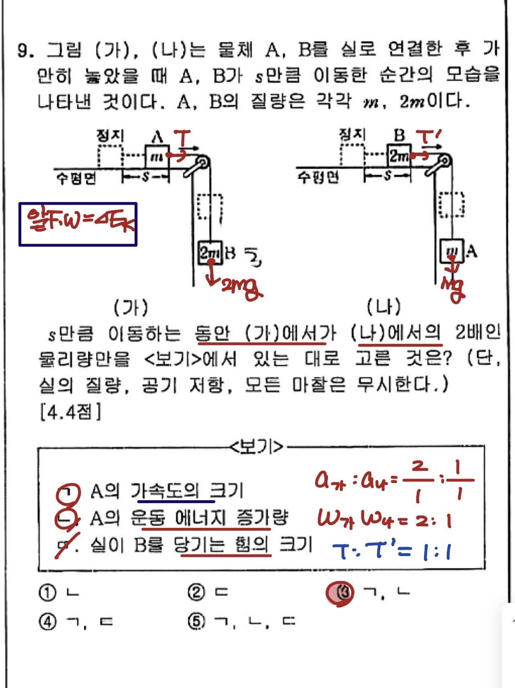
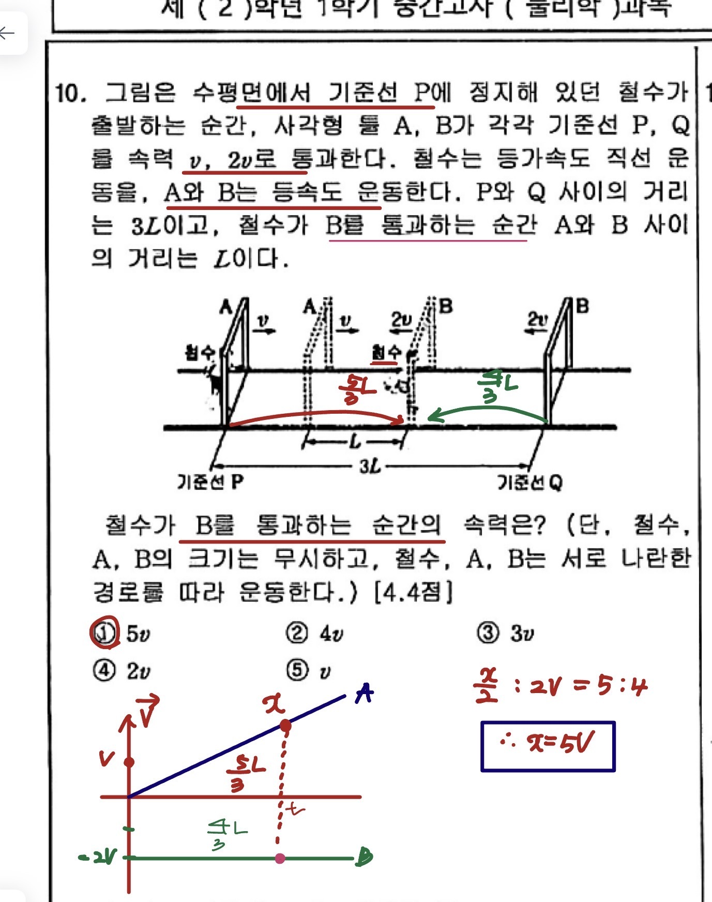
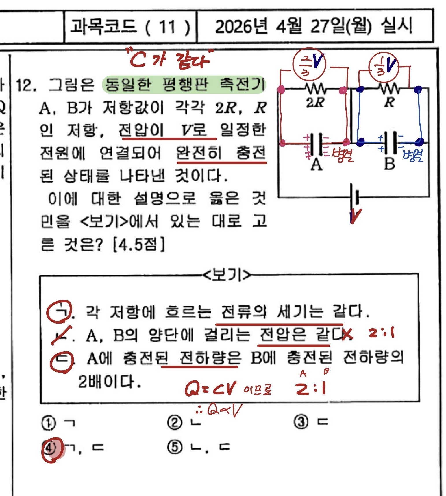
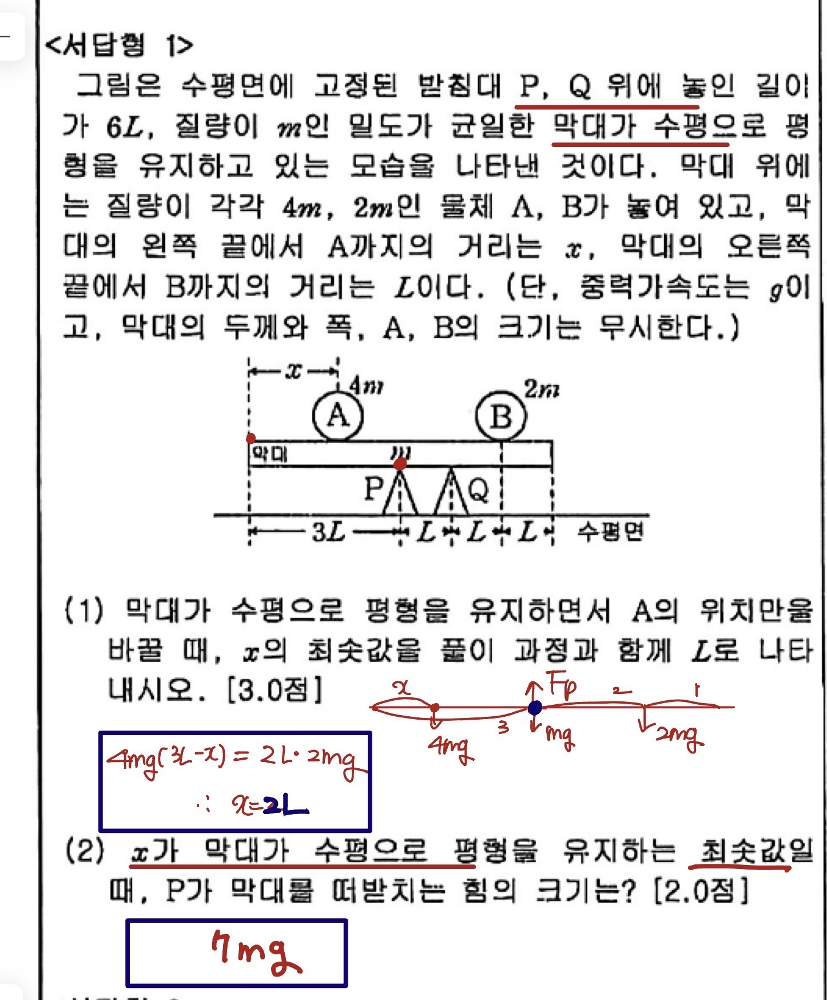
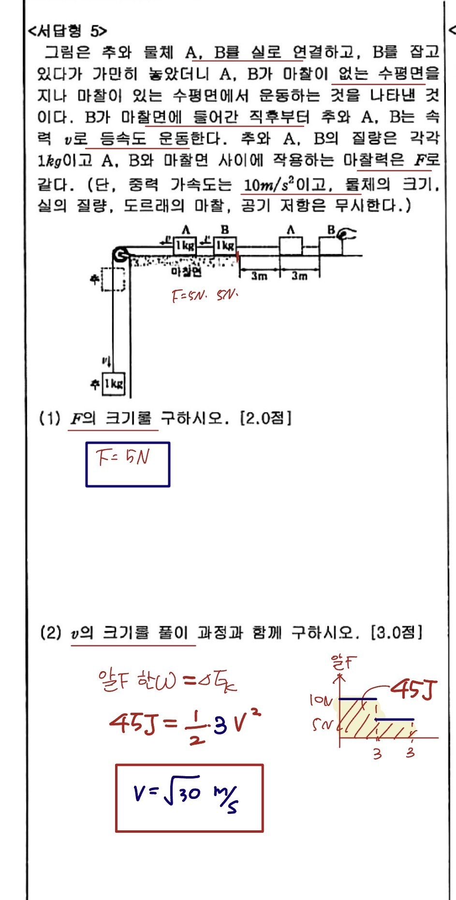
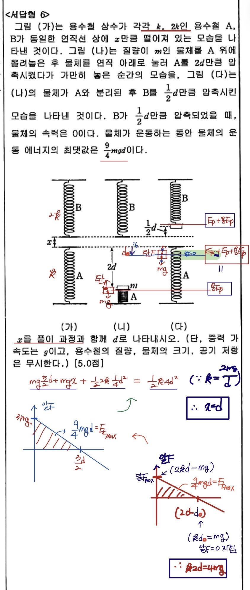

✕ 닫기 (ESC)
이과 학생의 경우 2·3학년 수학·과학 심화 교과 이수 이력이 서류심사의 핵심 변별력으로 부상합니다. 즉 물리학 내신 등급은 단순히 학교 성적이 아니라, 입시에서 학생의 학업 역량을 증명하는 핵심 자료가 됩니다. 1학기 기말부터 매 시험을 대입 자료로 인식하고 임해야 합니다.
| 대단원 | 중단원 | 소단원 |
|---|---|---|
| 2권 전기와 자기 | 2. 자기 | 물질의 자성 |
| 전류의 자기 작용 | ||
| 전자기 유도 | ||
| 3권 빛과 물질 | 1. 빛과 이중성 | 빛의 중첩과 간섭 |
| 빛의 굴절 (볼록·오목렌즈 작도법 포함) | ||
| 빛과 물질의 이중성 (광전효과·드브로이) | ||
| 2. 물질과 시공간 | 스펙트럼과 에너지 준위 (보어 원자모형) | |
| 에너지띠와 반도체 (다이오드 포함) | ||
| 특수 상대성 이론 (동시성의 상대성 제외) |
| 주차 | 기간 | 학습 내용 | 핵심 포인트 |
|---|---|---|---|
| 1주 | 5/3~5/9 | 2권 자기 — 물질의 자성 | 강자성·상자성·반자성 구분, 자기쌍극자 |
| 2주 | 5/10~5/16 | 2권 자기 — 전류의 자기 작용 / 전자기 유도 | 앙페르 법칙, 솔레노이드, 렌츠·패러데이 |
| 3주 | 5/17~5/23 | 3권 1단원 — 빛의 중첩과 간섭 | 이중슬릿, 경로차, 위상차 그래프 |
| 4주 | 5/24~5/30 | 3권 1단원 — 빛의 굴절(렌즈 작도법) / 이중성 | 스넬법칙, 볼록·오목렌즈 작도법, 광전효과, 드브로이 파장 |
| 5주 | 5/31~6/6 | 3권 2단원 — 스펙트럼·에너지 준위 | 보어 원자모형, 에너지 준위, 방출·흡수 스펙트럼 |
| 6주 | 6/7~6/13 | 3권 2단원 — 에너지띠·반도체·다이오드 / 특수상대성 | 전도띠·원자가띠, p-n접합·다이오드, 시간팽창·길이수축 (동시성의 상대성 제외) |
| 7주 | 6/14~6/20 | 전체 복습 + 기출 패턴 적용 문제 | 그래프·복합 개념·함정 유형 집중 |
| 8주 | 6/21~기말 | 실전 모의고사 + 직보 + 오답 정리 | 시간 안배 연습, 서답형 풀이과정 점검 |
1순위 — 전자기 유도 : 그래프 해석 + 변별 문제 출제 가능성 매우 높음. 렌츠 법칙 부호, 유도기전력 식 완벽 숙지.
2순위 — 빛의 간섭·굴절(렌즈 작도법 포함) : 계산 문제 + 경로차 그래프 + 볼록·오목렌즈 작도법. 2022 개정에서 작도법이 명시 포함됨.
3순위 — 광전효과·물질의 이중성 : 일함수, 운동E, 드브로이 파장 관계식. 개념+계산 혼합형.
4순위 — 보어 원자모형·에너지 준위·스펙트럼 : 에너지 준위 차로 방출·흡수 파장 계산.
5순위 — 에너지띠·반도체·다이오드 : 전도띠/원자가띠 구분, p-n접합 다이오드 동작 원리.
6순위 — 특수 상대성 이론 : 시간 팽창·길이 수축만 학습 (2022 개정 — 동시성의 상대성은 제외).
0~15분 : 객관식 1~9번 + 12번 (기본 영역) — 1문항당 약 1분 30초
15~25분 : 서답형 1·2·3·5번 (확실히 풀 수 있는 것부터) — 1문항당 약 2분 30초
25~35분 : 객관식 10·11·14번 + 서답형 4번 (응용 영역)
35~40분 : 변별 문항 13·15·16번 + 서답형 6번 (도전 영역) — 못 풀어도 부분점수 노리기
1. 주어진 조건을 먼저 식으로 옮긴다
2. 적용할 법칙·공식을 명시한다 (예: 운동량 보존)
3. 대입식을 한 줄 써준다
4. 단위를 정확히 붙인다
5. 최종 답은 박스나 밑줄로 강조
역학 단원 비중이 64%로 압도적이며, 그래프 해석 + 복합 개념 결합형 변별 문항이 4문항 이상 출제되었습니다. 40분 안에 22문항을 풀어내야 하므로 시간 압박이 큰 시험입니다.
역학 (운동·힘·에너지·돌림힘) 58.7점 / 100점 = 58.7%
열역학 (열기관·열효율) 5점 / 100점 = 5%
전기 (전기장·회로·축전기) 36.3점 / 100점 = 36.3%
| 번호 | 단원 | 핵심 개념 | 배점 | 난이도 | 코멘트 |
|---|---|---|---|---|---|
| 1 | 역학 | 힘의 평형·작용반작용 | 4.2 | 하 | 3물체 적층 + 위로 미는 힘. 평형식만 세우면 끝. |
| 2 | 역학 | 운동량 보존 | 4.2 | 하 | 3물체 충돌 후 모두 정지. ΣP=0 한 줄로 해결. |
| 3 | 역학 | v-t 그래프 해석 | 4.2 | 하 | 이동거리·운동방향 변화·알짜힘 비. 그래프 기본기. |
| 4 | 역학 | 3물체 가속도·작용반작용 | 4.3 | 하 | 전체 가속도 a=2 m/s². 표준 유형. |
| 5 | 전기 | 균일 전기장 속 점전하 운동 | 4.3 | 하 | 전위차→일→운동E 변환. 등가속도 분석. |
| 6 | 전기 | 휘트스톤 브리지 | 4.3 | 하 | 전압계 6V 조건으로 R 결정. 비례식 패턴. |
| 7 | 역학 | 빗면 등속도 + 용수철 압축 | 4.3 | 하 | 역학적E 보존 + 손실에너지. 손실항 빠뜨리면 오답. |
| 8 | 전기 | 평행판 축전기 4종 비교 | 4.3 | 하 | 단면적·간격 다른 4개 전하량 비. C=εS/d 응용. |
| 9 | 역학 | 도르래 두 가지 비교 | 4.4 | 하 | 가속도·일·장력 비교. 빈출 유형. |
| 10 | 역학 | 등가속도 + 등속도 만나기 | 4.4 | 중 | v-t 그래프로 시각화하면 5v 도출. 그래프 활용 필수. |
| 11 | 전기 | 회로 + 스위치 조합 | 4.4 | 중 | S1·S2 ON/OFF에 따라 합성저항 변화. 케이스 분석. |
| 12 | 전기 | 평행판 축전기 + 회로 | 4.5 | 중 | 동일 축전기, 병렬 → V 같다, Q∝V. 추론형. |
| 13 | 역학 | 3물체 충돌 + x-t 그래프 | 4.5 | 상 | B-C 거리 그래프 해석 + 운동량 보존 2회 적용. |
| 14 | 전기 | 점전하 + 전기장 0지점 | 4.5 | 중 | 전기장 0지점이 외부에 존재 → 전하 부호·크기 추론. 반복 학습 시 안정 영역. |
| 15 | 역학 | 막대 + 도르래 + 공 | 4.6 | 상 | 돌림힘 + 장력비 3:1. M 결정. 복합형 최상난도. |
| 16 | 역학 | 줄 끊어진 후 등가속도 | 4.6 | 상 | 속도비 14/11 조건 → M 도출. 식 정리력 필요. |
| 서답1 | 역학 | 막대 평형 (돌림힘) | 5.0 | 하 | (1) x=2L 회전평형 (2) P지지력=7mg. |
| 서답2 | 열역학 | 열기관 효율 | 5.0 | 중 | (1) WA=Q0/3 (2) B효율=4/15. 효율식 적용. |
| 서답3 | 전기 | 균일 전기장 속 점전하 | 5.0 | 하 | (1) 부호·전기력 (2) 전위차 (3) v=√(2qEd/m). |
| 서답4 | 전기 | 회로 + 전력비 | 5.0 | 중 | (1) R=20Ω (2) 소비전력비 계산. |
| 서답5 | 역학 | 마찰면 + 일에너지 | 5.0 | 중 | (1) F=5N (2) v=√30 m/s. 알짜F·일에너지정리. |
| 서답6 | 역학 | 두 용수철 + 운동E 최댓값 | 5.0 | 상 | x=d 도출. 알짜F=0 지점 + 에너지 보존 복합. |
최과학 과학전문학원 수업·직보에서 다룬 핵심 8개 문항의 미영쌤 풀이 노트입니다. 사진을 클릭하면 크게 볼 수 있어요. 풀이 흐름을 보면서 같은 유형이 기말에 나왔을 때 어떻게 접근해야 하는지 익히세요.








📌 난이도별 점수 분포 — 하 52.5점 / 중 22.8점 / 상 24.7점. 즉 하·중을 모두 잡으면 75점대 진입이 가능합니다. 변별 영역(상)은 시간 안배를 잘했을 때 도전하는 영역입니다.